Struts2学习笔记
 CoMath
CoMath
1、什么是Struts2:
Struts2是一个基于MVC设计模式的Web应用框架，它本质上相当于一个servlet，在MVC设计模式中，Struts2作为控制器(Controller)来建立模型与视图的数据交互. Struts2是WebWork2基础发展而来的.
2、Struts2优点：
- Struts2的应用可以不依赖于Servlet API（request,response）和struts API；这种设计属于无侵入式设计.
- Struts2提供了拦截器,利用拦截器可以进行AOP编程,实现如权限拦截等功能.
- Struts2提供类型转换器,可以把特殊类型参数转换程序要的类型.
- Struts2提供支持多种表现层技术,如JSP,freeMarker,Velocity等.
- Struts2的输入校验可以对指定的方法进行校验.
- Struts2提供了全局范围、包范围、和Action范围的国际换资源文件管理实现.
3、搭建Struts2开发环境
3.1、开发Struts2应用依赖的jar文件
开发Struts2应用需要依赖的jar文件在解压目录的lib文件夹下,不同的应用需要的JAR包是不同的. 开发Struts2程序最少需要的JAR.
- struts2-core-2.x.x.jar ：Struts2框架的核心类库.
- xwork-2.x.x jar ：XWork类库,Struts2在其上构建.
- ognl-2.6.x.jar ：对象图导航语言(Object Graph Navigation Language),struts2框架通过其读写对象的属性.
- freemarker-2.3.x.jar ：Struts 2的UI标签的模板使用FreeMarker编写.
- commons-logging-1.1.x jar ：ASF出品的日志包,Struts2框架使用这个日志包来支持Log4J和JDK1.4+的日志记录.
- commons-fileupload-12 .1.jar ：文件上传组件,2 .1.6版本后必须加入此文件. 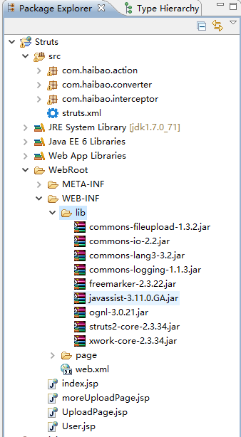
3.2、搭建Struts2开发环境
- 找到Struts2需要的几个jar包；
- 编写配置struts2的配置文件：src下创建struts.xml文件；
- 在web.xml中加入struts2 MVC框架启动配置
<filter>
<filter-name>struts2</filter-name>
<filter-class>org.apache.struts2.dispatcher.ng.filter.
StrutsPrepareAndExecuteFilter</filter-class>
</filter>
<filter-mapping>
<filter-name>struts2</filter-name>
<url-pattern>/*</url-pattern>
</filter-mapping>
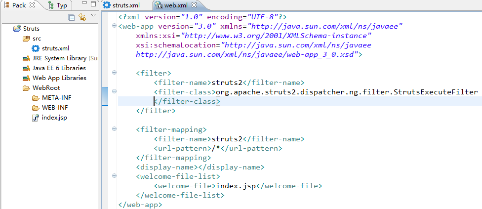
4、Struts.xml配置中的包介绍
- 配置包时必须指定name属性： 该属性名字可以任意,但是必须唯一,主要作用在于：如果其他包要继承该包就必须通过该属性(name属性)进行引用.
- 包的namespace属性： 用于定义该包的命名空间,命名空间作为访问该包下Action路径的一部分. 如果不配置,默认为””(空字符串).
- 继承方法extends：
通常每个包都应该继承struts-default包,因为Struts2很多核心的功能都是拦截器来实现的. struts-default定义了这些拦截器和Result类型；struts-default包是在struts2-core-2.jar文件中的struts-default.xml中定义的,struts-default.xml也是Struts2默认配置文件. Struts2每次都会自动加载struts-default.xml文件.
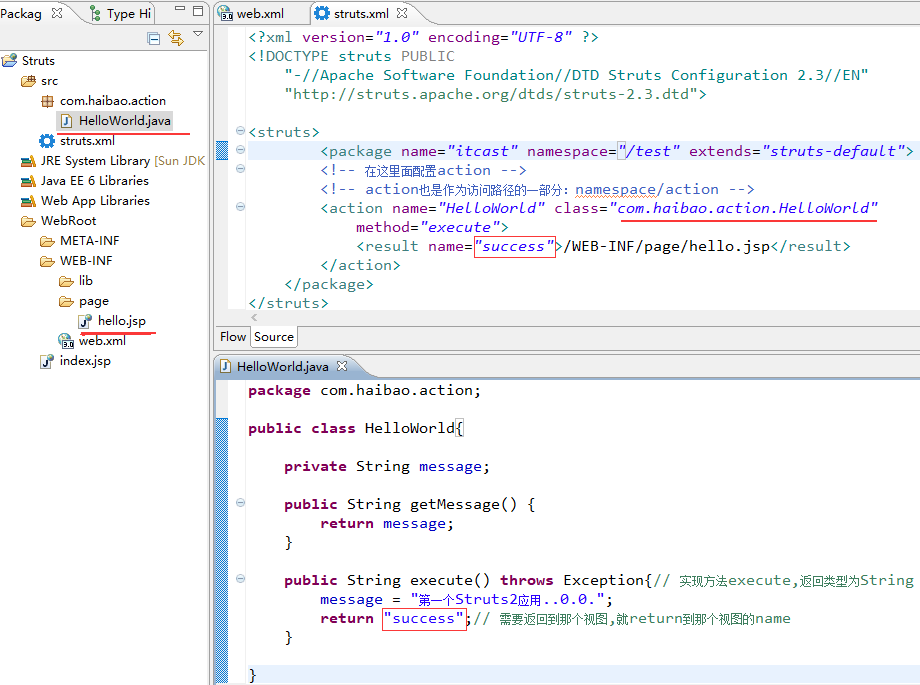 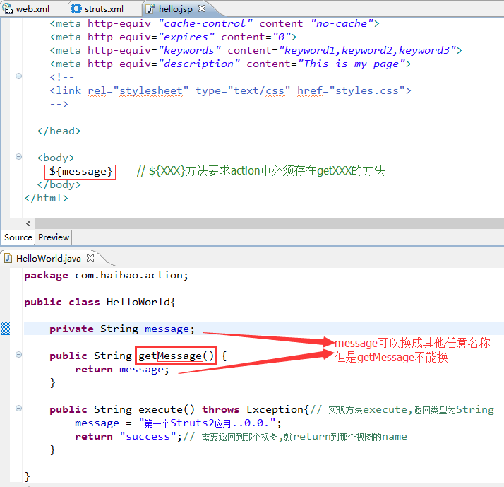 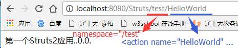
4.1、Action配置中的各种默认值
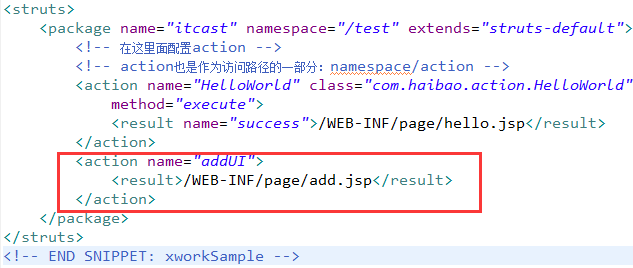
- 如果没有为action指定class,默认是ActionSupport.
- 如果没有为action指定method,默认执行action中的execute()方法.
- 如果没有指定action的name属性,默认值为success.
Action中的result的各种转发类型
Struts2常用的结果类型有：dispathcher(默认值)、redirect(重定向)、redirectAction、plainText 在result中可以使用${属性名}表达式访问action中的属性,表达式里的属性名对应action中的属性.
- dispathcher(默认值)：内部请求转发
- redirect(重定向)：
// 格式：
<result type="redirect">/hello.jsp</result>
// 如果重定向需要带参数,则用：
<result type="redirect">/hello.jsp?id=${id}</result>
此时,需要在对应的Action下有对应的变量,并且提供get属性. 注意：重定向不能访问WEB-INF下的文件.
- redirectAction(在其他*Action下)：
// 格式：
<action name=" redirectActionName">
<result type=" redirectAction">重定向的name</result>
</action>
// 如果不不在同一个包下需配置项
<result type=" redirectAction">
<param name=" actionName">xxx</param>
<param name=" namespace">/…/…</param>
</result>
补充.
中文字符编码、解码
- 编码
(java.net.URLEncoder)：URLEncoder.encode("字符串","UTF-8"); - 解码
(java.net.URLDecoder)：URLDecoder.encode(new String (request.getParameter("属性名").getBytes("ISO8859-1"),"UTF-8"),"UTF-8"); JSP文件中可以用$(param.属性名)访问Action中的属性(会乱码)
plaintext(显示原始文件内容的重定向)：例如某功能需要查看源代码
<action name=" plainText">
<result type=" plainText"></result>
</action>
注意：当该JSP文件存在中文的时候,会乱码！
需要加入：
<param name=" location">/xxx.jsp</param><!—定向的路径-->
<param name=" charSet">UTF-8</param><!--指定读取文件的编码-->
附：Struts2的全视图 单个包下：
<package name=" xxx" namespace=" /…/…" extends=" struts-default">
<global-results>
<result type=" mess…">/…/…</result>
</global-results>
</package>
全局：(在一个包中写,然后其他包继承该包)
4.2、为Action属性注入值
<package name=" xxx" namespace=" /…/…" extends=" struts-default">
<action name=" list" class="com.haibao.HelloWorldAction" method="execute">
<param name="path ">/image</param>
<result name="success ">/xxx.jsp </result>
</action>
</package>
附：在HelloWorldAction下必须存在“path”属性的get方法 ,访问xxx.jsp得到的是“/image”
5、指定struts2处理的请求后缀
5.1、默认后缀及修改
默认后缀：.action 默认后缀可以通过常量"struts.action.extension"进行修改
<constant name=" struts.action.extension" value="do"/>
如果用户指定多个请求后缀,则多个后缀之间以英文逗号( , )隔开
<constant name=" struts.action.extension" value="do,action"/>
5.2、常用的常量
<!--指定默认编码集,作用于HTTPServletRequest的setCharacterEncoding方法和freemarker、velocity的输出-->
<constant name=" struts.i18n.encoding" value="UTF-8"/>
<!-- 该属性指定需要的struts2处理的后缀请求如果用户指定多个请求后缀,则多个后缀之间以英文逗号(,)隔开-->
<constant name=" struts.action.extension" value="do,action"/>
<!-- 设置浏览器是否缓存静态内容. 默认值为true(生产环境下使用)-->
<constant name="struts.serve.static.browserCache" value="false"/>
<!-- 当struts的配置文件修改后,系统是否自动重新加载该文件,默认false(生产环境下使用) -->
<constant name=" struts.configuration.xml.reload" value="true"/>
<!-- 开发模式下使用,这样可以打印出更详细的错误信息 -->
<constant name=" struts.devMode" value="true"/>
<!-- 默认的视图主题 -->
<constant name=" struts.ui.theme" value="smple"/>
<!-- 与Spring集成时,指定有Spring负责action对象的创建 -->
<constant name=" struts.objectFactory" value="spring"/>
<!-- 该属性设置Struts2是否支持动态方法调用,默认为true -->
<constant name=" struts.enable.DynamicMethodlnvocation" value="true"/>
<!-- 上传文件的大小限制 -->
<constant name=" struts.multipart.maxSize" value="10701096"/>
5.3、常量的定义
常量可以在struts.xml或struts.propreties中配置,建议在struts.xml中配置 在struts.xml文件中配置常量：
<struts>
<constant name="struts.action.extension" value="do">
</struts>
在struts.propreties中配置常量：
struts.action.extension=do
常量可以在下面多个配置文件中定义,加载常量的搜索顺序为：
- struts-default.xml
- struts-plugin.xml
- struts.xml
- struts.propreties
- web.xml
多个文件中配置了同一个常量,则后一个文件中配置的常量值会覆盖前面文件中配置的常量值.
6、Struts2的处理流程
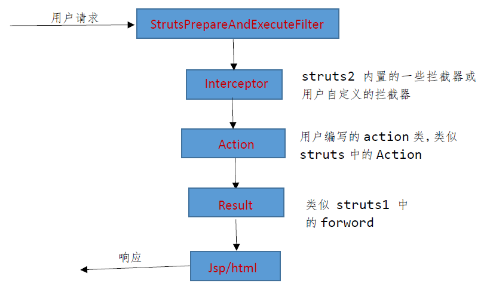
StrutsPrepareAndExecuteFilter是Struts的核心控制器,他负责拦截由
为应用指定多个Struts配置文件
在大部分应用里,随着应用规模的增加,系统中Action的数量也会大大增加,导致struts.xml配置文件变得臃肿,为了避免struts.xml文件过于庞大,提高struts.xml文件的可读性,可以将一个struts.xml配置文件分解成多个配置文件,然后在struts.xml文件中包含其他配置文件(通过
<struts>
<include file="struts-user.xml"/>
<include file="struts-order.xml"/>
</struts>
7、动态方法调用：
- 动态方法调用DMI（动态指定）,可以在url地址中动态指定action执行哪个方法,可以通过action+!+方法名. (注：只要Action对象中有这个方法,并且返回类型为String就可以调用,这样struts.xml文件配置文件就可以不需要配置method属性)：
- 设置Struts2是否支持动态方法调用,如果没有这一行要加上去,要不然会报错误,如果你加上这一行,但是你把value值改成false,也会报错！ 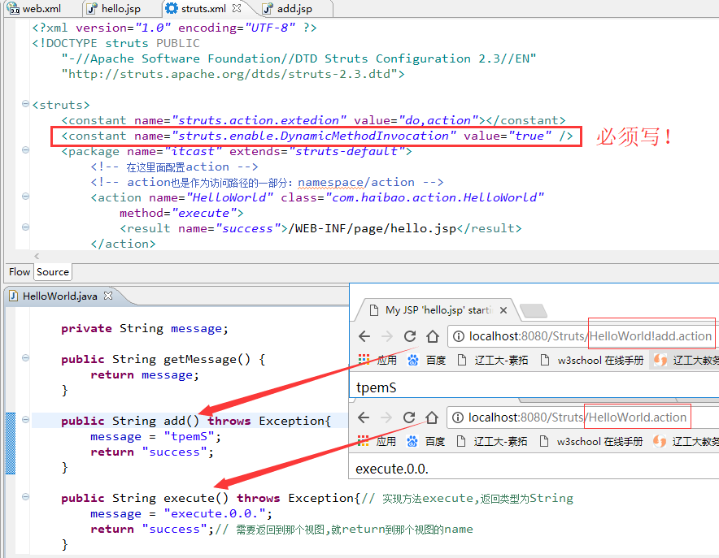
8、使用通配符定义action
其中*匹配所有,在method="{数字}“中用{数字}表示匹配第几个*,其中跳转页面的命名也是根据第一个*的值进行的. 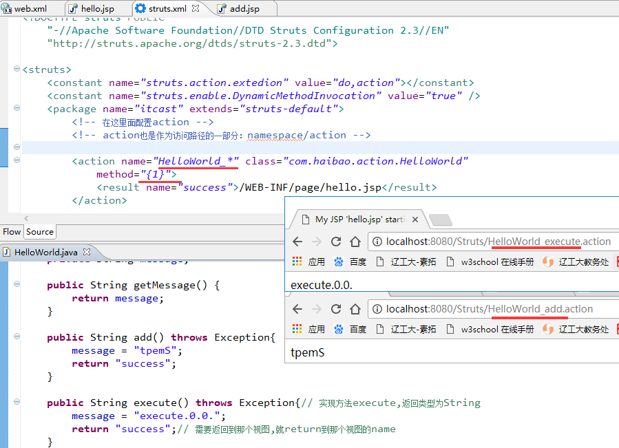
9、请求参数的接收
在Action中必须存在该属性并且存在该属性的set方法,这样在url中赋值才能接收到get方法直接在url后面加入“?属性名=属性值&属性名=属性值”
9.1、基本类型
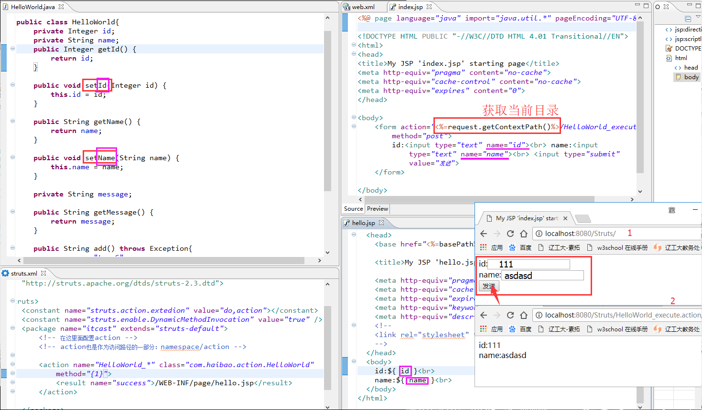
9.2、复合类型
（为了减少复杂度,尽量用复合类型） 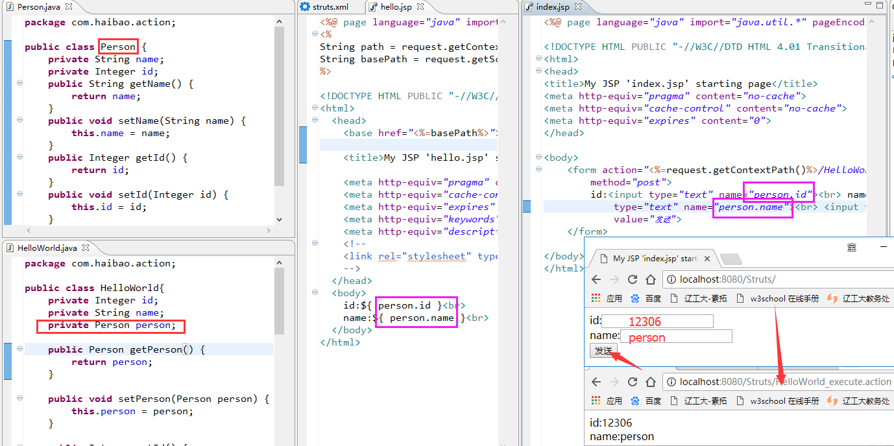 原理：Struts2首先通过反射技术调用Person的默认构造器创建product对象,然后再通过反射技术调用product中与请求参数同名的属性的setter方法来获取请求参数的值.
10、关于Struts2.1.6接收中文请求参数乱码问题
Struts2.1.6版本中存在一个Bug,即接收到的中文请求参数为乱码（以post方法提交）,原因是struts2.1.6在获取并使用了请求参数后才调用HttpServletRequest的setCharacterEncoding()方法进行编码设置,导致应用使用的就是乱码请求参数.
解决方法：新建一个Filter,把这个Filter放置在Struts2的Filter之前,然后在doFilter()方法里添加一下代码：
public void doFilter(…){
HttpServletRequest req = (HttpServletRequest)request;
req.setCharacterEncoding("UTF-8");
filterchain.doFilter(request,response);
}
11、自定义类型转换器
11.1、局部类型转换器：
- 首先需要定义类并继承DefaultTypeConverter类;
- 在Action类所在的包下放置ActionClassName-conversion.properties文件；其中ActionClassName是Action的类名,后面的-conversion.properties是固定写法;
- 在.properties文件中内容为：属性名称=类型转换器的全类名. 以出生年月为例： 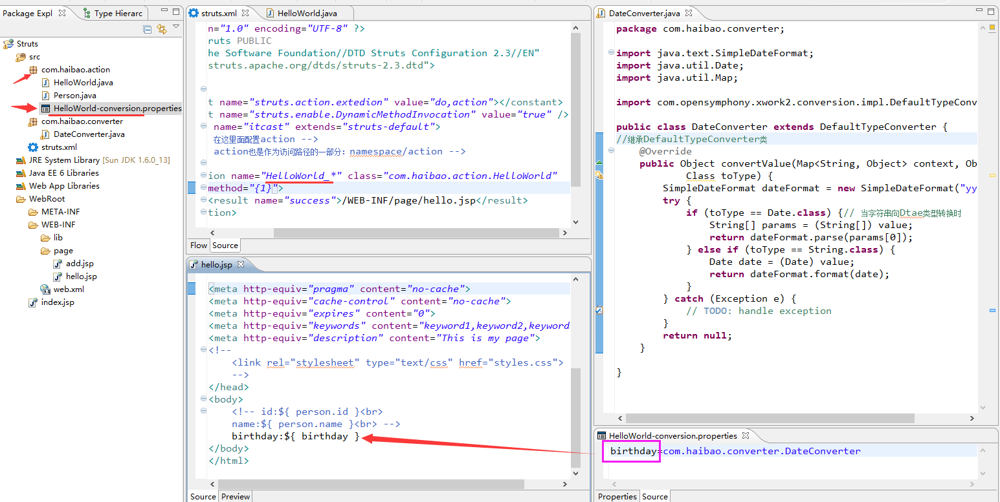
11.2、全局类型转换器：
在src(根目录)下放置xwork-conversion.properties. 文件中的内容为： 带转换的类型=类型转换器的全类名 例如：java.util.Date=com.haibao.… 11.3、访问或添加属性 仅仅是为了访问添加：
public String scope() throws Exception{//方法
ActionContext ctx = ActionContext.getContext();
ctx.getApplication().put("app","应用范围");//往ServletContext里放入app
ctx.getSession().put("ses","session范围")；//往ServletContext里放入ses
ctx.put("req","request范围")；//往ServletContext里放入req
return "scope";//
}
JSP中：
<body>
${applicationScope.app}<br>
${sessionScope.ses}<br>
${requestScope.ses}<br>
<body>
要是想得到对象：
// 方法一：通过ServletActionContext类直接实现
public String rsa() throws Exception{//方法
HttpServletRequest request = ServletActionContext.getRequest();
ServletContext servletContext = ServletActionContext.getServletContest();
request.setAttribute("req","应用范围");
request.getSession().setAttribute("ses","session范围")；
servletContext.setAttribute("app","应用范围");
return "scope";//
}
// 方法二：通过指定接口,有Struts框架运行时注入
public class HelloWorldAction implements ServletRequestAware,
ServletResponseAware,ServletContextAware{
private HttpServletRequest requesr;
private ServletContextResponse Context;
private HttpServletResponse response;
public void setServletRequest(HttoServletRequest req){
this.request = req;
}
public void setServletResponse(){
}
public void setServletContext(){
}
12、文件上传
12.1、单文件上传
步骤
- 第一步：在WEB-INF/lib下加入commons-fileupload-1.2.1.jar（2.1版本之后必须添加）、commons-io.jar（需要用到里面的工具类）
- 第二步：把form表的enctype设置为：“multipart/form-data”
<form action="${pageContext.request.contextPath}/uploadAction_execute.action" enctype="multipart/form-data" method="post">
文件：<input type="file" name="image">
<input type="submit" value="上传">
</form>
- 第三步：在Action类中添加以下属性
public class UploadAction {
private File image;// 文件名称
// 如果想得到上传文件的名称,则定义文件名. 格式：文件名称+FileName
private String imageFileName;// 得到上传文件名称
// 如果想得到文件的类型,则定义文件名. 格式：文件名称+ContextType
private String imageContextType;
public String getImageFileName() {
return imageFileName;
}
public void setImageFileName(String imageFileName) {
this.imageFileName = imageFileName;
}
// 提供与字段名称相符的get、set属性,以便得到上传的文件
public File getImage() {
return image;
}
public void setImage(File image) {
this.image = image;
}
public String execute() throws Exception {
// 在该方法下进行保存
String realPath = ServletActionContext.getServletContext().getRealPath(
"/images");// 得到根目录
System.out.println("*****" + realPath + "****");
if (image != null) {
File savefile = new File(new File(realPath), imageFileName);// 保存到...
if (!savefile.getParentFile().exists())
savefile.getParentFile().mkdirs();
FileUtils.copyFile(image, savefile);// 调用commons-io.jar下的工具类Copy文件到指定位置
ActionContext.getContext().put("message", "上传成功");// 返回信息
}
return "success";
}
}
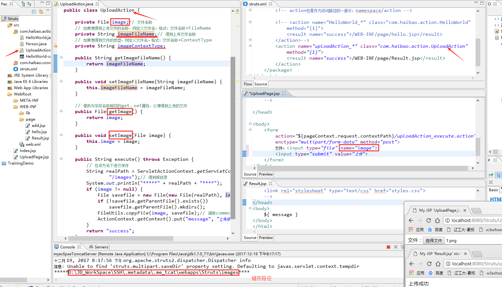 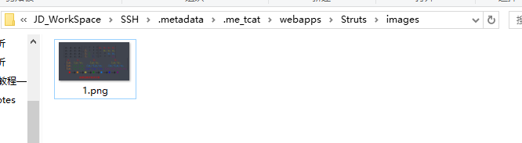
12.2、多文件上传
只需要将单文件上传的第三步：在Action类中添加以下属性中把单个文件变成数组.
public class moreUploadAction {
private File[] image;// 文件名称
// 如果想得到上传文件的名称,则定义文件名. 格式：文件名称+FileName
private String[] imageFileName;// 得到上传文件名称
// 如果想得到文件的类型,则定义文件名. 格式：文件名称+ContextType
private String[] imageContextType;
public File[] getImage() {
return image;
}
public void setImage(File[] image) {
this.image = image;
}
public String[] getImageFileName() {
return imageFileName;
}
public void setImageFileName(String[] imageFileName) {
this.imageFileName = imageFileName;
}
public String[] getImageContextType() {
return imageContextType;
}
public void setImageContextType(String[] imageContextType) {
this.imageContextType = imageContextType;
}
public String execute() throws Exception {
// 在该方法下进行保存
String realPath = ServletActionContext.getServletContext().getRealPath(
"/images");// 得到根目录
System.out.println("*****" + realPath + "****");
if (image != null) {
File savedir = new File(realPath);
if (!savedir.exists())
savedir.mkdirs();
for (int i = 0; i < image.length; i++) {
File savefile = new File(savedir, imageFileName[i]);// 保存到...
FileUtils.copyFile(image[i], savefile);// 调用commons-io.jar下的工具类Copy文件到指定位置
}
ActionContext.getContext().put("message", "上传成功");// 返回信息
}
return "success";
}
}
13、自定义拦截器
需求：对于登陆的用户可以访问Action中的所有方法,而没有登录的用户则不可以访问任何方法.
方法：添加自定义拦截器. 实现com.opensymphony.xwork2.interceptor.interceptor接口
@Override
public String intercept(ActionInvocation arg0) throws Exception {
// 当拦截到Action时执行该方法
// 得到session中存在的对象
Object user = ActionContext.getContext()
.getSession().get("user");
// 如果希望被拦截的的方法执行,调用arg0.invoke();
if (user != null)
return arg0.invoke();//如果User不为null,代表合法用户,允许访问方法
// 返回的是Action中对应方法的返回值String
ActionContext.getContext().put("message", "请先登录");
return "success";
}
在struts.xml中定义拦截器
<!-- 定义拦截器 -->
<interceptors>
<!-- 自定义拦截器 -->
<interceptor name="permission" class="com.haibao.interceptor.PermissionInterceptor" />
<!-- 定义拦截器栈 目的：使得Struts2自带的拦截器有效 -->
<interceptor-stack name="permissionStack">
<interceptor-ref name="defaultStack"/>
<interceptor-ref name="permission"/>
</interceptor-stack>
</interceptors>
<action name="loginAction_*" class="com.haibao.action.LoginAction" method="{1}">
<result name="success">/WEB-INF/page/LoginPage.jsp</result>
<interceptor-ref name="permissionStack"/>
</action>
注意： 如果直接在action中定义使用拦截器,则不会在使用Struts自带拦截器！这样Struts2的优势就没有了，所以引入拦截器栈的概念，在拦截器栈中要把Struts的拦截器写在前面，以保证web项目会首先执行Struts再带的拦截器. 如果想所有的程序都是用自定义的拦截器，可以使用：
<default-interceptor-ref name="permissionStack"/>
效果演示：
直接访问会被拦截： 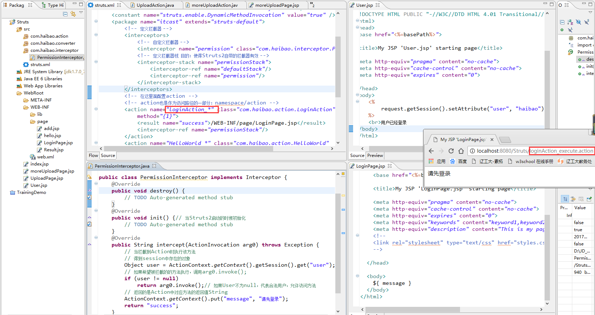 登录后访问 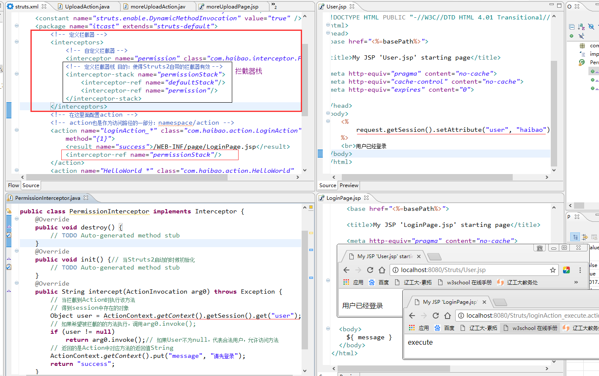
14、输入校验
Struts2中可以实现对action的所有方法进行校验或者对action的指定方法进项校验，实现方法有两种：
- 采用手工编写代码实现
- 对所有方法进行校验 重写validate()方法实现，validate()方法会校验action中所有的与execute方法签名相同的方法. 当某个数据校验失败时，调用addFieldError()方法往系统的fieldErrors添加校验失败信息，（为了使用addFieldError()方法，action可以继承ActionSupport），如果系统的fieldError包含失败信息，struts2会将请求转发到名为input的result. 在input视图中可以通过<s:fielderror/>显示失败信息. 需要引入标签
<%@ taglab url="/struts-tags" prefix="s"%>
public void validate(){
if(this.mobile==null||"".equals(this.mobile.trim())){
this.addFieldError("username","用户名不能为空");
}
if(this.mobile==null||"".equals(this.mobile.trim())){
this.addFieldError("mobile","手机号不能为空");
}else{
if(!Pattern.compile("^1[358]\\d{9}").matcher(this.mobile.trim()).matches()){
this.addFieldError("mobile","手机号格式不正确");
}
}
}
- 对指定方法进行校验
重写validateXxx()方法实现，validate()方法会校验action中所有的与execute方法签名相同的方法. 当某个数据校验失败时，调用addFieldError()方法往系统的fieldErrors添加校验失败信息，（为了使用addFieldError()方法，action可以继承ActionSupport），如果系统的fieldError包含失败信息，struts2会将请求转发到名为input的result. 在input视图中可以通过<s:fielderror/>显示失败信息. 需要引入标签
<%@ taglab url="/struts-tags" prefix="s"%>
public void validateUpdata(){
if(this.mobile==null||"".equals(this.mobile.trim())){
this.addFieldError("username","用户名不能为空");
}
if(this.mobile==null||"".equals(this.mobile.trim())){
this.addFieldError("mobile","手机号不能为空");
}else{
if(!Patten.compile("^1[358]\\d{9}").matcher(this.mobile.trim()).matches()){
this.addFieldError("mobile","手机号格式不正确");
}
}
}
- 输入校验的流程
- 类型转换器队请求参数执行类型转换，并把转换后的赋值给action中的属性.
- 如果在执行类型转换的过程中出现异常，系统会将异常信息保存到ActionContext，conversionError拦截器将异常信息封装到fieldErrors里. 不管类型转换是否出现异常，都会进入第3步.
- 系统通过反射技术先调用action中的validateXxx()方法，Xxx为方法名.
- 在调用action中的validate()方法.
- 经过上面4步，如果系统中的fieldErrors存在错误信息（即存放错误信息的集合的size>0），系统自动将请求转发至名称为input视图. 如果系统中的fieldErrors没有任何错误信息，系统将执行action中的处理方法.
- 基于XML配置方式实现
a) 对所有方法进行校验
在Action相同包下创建ActionClassName-validation.xml文件. 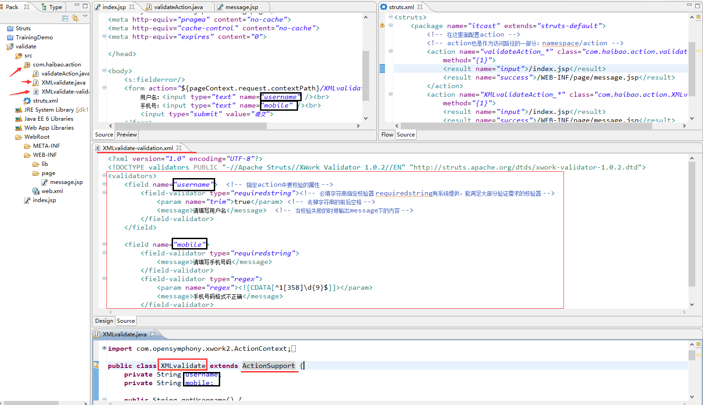 Struts2 的验证规则大概有以下数种：
- required:必填校验器，要求field的值不能为null
- requiredstring:必填字符串校验器，要求field的值不能为null,并且长度大于0，默 认情况下会对字符串去掉前后空格
- int:整数校验器，要求field的值必须在整数范围内，min指定最小值，max指定最大值
- double:双精度浮点数校验器
- date:日期校验器
- expression:表达式校验器
- fieldexpression:字段表达式校验器
- email:电子邮件校验器，要求如果field的值非空，则必须是合法的邮件地址
- url:网址校验器，要求如果field的值非空，则必须是合法的url地址
- visitor:Visitor校验器，用于校验action的复合属性，它指定一个校验文件用于校验复合属性中的属性
- conversion:转换校验器
- stringlength:字符串长度校验器
- regex:正则表达式校验器
常用的验证规则：
- 必填检验
<validators>
<field name="username">
<field-validator type="required">
<message>指定检验失败的提示信息</message>
</field-validator>
</field>
</validators>
- 必填字符串检验
<validators>
<field name="username">
<field-validator type="requiredstring">
<param name="trim">true</param>
<message>指定检验失败的提示信息</message>
</field-validator>
</field>
</validators>
- 整数检验器/浮点检验
<validators>
<field name="age">
<field-validator type="int">
<param name="min">1</param>
<param name="max">150</param>
<message>年纪必须在1到150之间</message>
</field-validator>
</field>
</validators>
- 日期检验
<validators>
<field name="birth">
<field-validator type="date">
<param name="min">1900-01-01</param>
<param name="max">2050-02-21</param>
<message key="birth.range"/>
</field-validator>
</field>
</validators>
- 字段表达式检验器(要求指定字段满足一个逻辑表达式)
<validators>
<field name="re_pass">
<field-validator type="fieldexpression">
<!--指定逻辑表达式 -->
<param name="expression"> (pass eq re_pass)</param>
<message>密码必须和确认密码相等</message>
</field-validator>
</field>
</validators>
- 邮件地址校验
<validators>
<field name="email">
<field-validator type="email">
<message>你的电子邮件地址必须是一个有效的电邮地址</message>
</field-validator>
</field>
</validators>
- 网址检验
<validators>
<field name="url">
<field-validator type="url">
<message>你的主页地址必须是一个有效的网址</message>
</field-validator>
</field>
</validators>
- 字符串长度检验
<validators>
<field name="user">
<field-validator type="stringlength">
<param name="minlength">4</param>
<param name="maxlength">20</param>
<message>你的用户名长度必须在4到20之间</message>
</field-validator>
</field>
</validators>
- 正则表达式检验
<validators>
<field name="user">
<field-validator type="regex">
<param name="regex"><![CDATA[(\w{4,25})]]></param>
<message>您输入的用户名只能是字母和数组，且长度必须在4到25之间</message>
</field-validator>
</field>
</validators
b) 对指定方法进行校验
取名更改为ActionClassName-ActionName-validation.xml
注意
- 当action同时提供了两个校验方法，则按照“所有方法”，“指定方法”的顺序汇总后执行；如果后面的文件包含前面文件的方法发生冲突，则只是用后面文件中的校验规则.
- 当action继承了另外一个action，父类action的校验文件会先被搜索到.
15、国际化
准备资源文件，资源文件的命名格式如下：
baseName_language_country.propeties
baseName_language.propeties
baseName.propeties
其中baseName是资源文件的基本名，可以自定义，但language和country必须是java支持的语言和国家.
- 中国：baseName_zh_CN.properties
- 美国：baseName_en_US.properties
如果没有使用开发工具，对于中文的属性文件，应该使用JDK提供的native2ascii命令把文件转换为Unicode编码的文件. 命令使用如下： native2ascii 源文件.properties 目标文件.properties
15.1、配置全局资源与输出国际化信息
当准备好资源文件之后，可以在struts.xml中通过struts.custom.i18n.resources常量把资源文件定义为全局变量：
<constant name="struts.custom.i18n.resources" value="baseName"/ >
其中baseName为资源的基本名. 之后就可以在页面或者action中访问国际化信息：
- 在JSP页面中使用
<s:text name=""/>标签输出国际化信息；<s:text name="user"/>,name为资源文件中的Key. - 在Action类中，可以继承ActionSupport，使用getText()方法得到国际化信息，该方法的第一个参数用于指定资源文件中的Key.
- 在表单标签中，通过Key属性指定资源文件中的Key，如：
<s:textfield name="realname" key="use"/>
输出带占位符的国际化信息
资源文件中的内容如下： welcome={0},你好{1}
15.2、JSP页面中输出占位符的国际化信息
<s:text name="welcome">
<s:param>熊大</s:param>
<s:param>学习</s:param>
<s:text/>
在Action类中获取带占位符的国际化信息，可以使用getText(String Key，String[] args)或者getText(String Key，List args)方法
15.3、包范围资源文件
在一个大型应用中，整个应用有大量的内容需要实现国际化，如果把国际化的内容放置在全局资源属性文件中，显然会导致资源文件变的庞大、臃肿、不便于维护，支个时候可以针对不同末班，使用包范围来组织国际化文件.
方法：在java的包下放置package_language_country.properties资源文件，package为固定写法，处于该包及子包下的action都可以访问该资源，当查到指定Key的消息时，系统会先从package资源文件查找，当不存在对应的Key时，才会从常量struts.custom.i18n.resources指定的资源文件中寻找.
15.4、Action范围资源文件
在Action类所在的路径，放置ActionClassName_languaage_country.properties资源文件，ActionClassName为action类的简单名称；当指定key的消息时，系统会先从ActionClassName_languaage_country.properties资源文件中查找.
15.5、JSP中直接访问某个资源文件
struts2提供了<s:i18n>标签，使用<s:i18n>标签可以在类路径下直接从某个资源文件中获取国际化数据，无需任何配置：
<s:i18n name="realname">
<s:text name="realname"/>
<s:i18n>
realname为要访问的资源文件的基本名
如果要访问的资源文件在类路径的某个包下，可以访问：
<s:i18n name="com/haibao/action/package">
<s:text name="realname">
<s:param>熊大</s:param>
</s:text/>
<s:i18n>
上面访问com.haibao.action包下基本名为package的资源文件.
16、OGNL表达式语言
OGNL是Object Graphic Navigation Language（对象图导航语言）的缩写，是一个开源的项目. Struts2框架采用OGNL作为默认的表达式语言.
相对于EL表达式，OGNL提供了：
- 支持对象方法调用：如xxx.sayHello()；
- 支持类静态方法调用和值访问，表达式的格式为@[类全名（包括路径）]@[方法名|值名]
例如：
@java.lang.String@format('foo %s'，bar)或者@com.haibao.Constant@APP_NAME - 操作集合对象.
Ognl有一个上下文（Context）概念，它实现了了java.utils.Map接口，Struts2中说明：
- 上下文（Context）的实现为ActionContext. 当Struts2接受一个请求时，会迅速创建ActionContext，ValueStack，action. 然后把action存进ValueStack，所以action的实例变量可以被OGNL访问.
- 访问上下文（Context）中的对象需要使用#符号标注命名空间. 如
#application、#session. 如：#application['userName']==#application.userName//获得application中userName值.（#session对象、#request对象、#paramete对象、attr对象—按照page—request—session—application顺序访问其属性）. - OGNL设定了一个跟对象（root）对象，在Struts2中根对象就是ValueStack（值栈）. 如果访问根对象中的属性，则可以省略#命名空间，直接访问该对象的属性即可. 如：${foo}//获得栈值中某个对象的foo属性.
注意：Struts2中，OGNL表达式需要配合Struts标签使用. 如：<s:property value="name">；使用EL表达式能够访问valueStack中对象的属性，原因是：Struts2对HTTPServletRequest作了进一步的封装.
17、采用OGNL表达式创建List/Map集合对象
17.1、试用如下直接生成一个List对象：
<s:set name="list" value="{'zhangsan','lisi','wangwu'}"/>
<s:iterator value="#list"><!-- 迭代器 -->
<s:property/><br>
</s:iterator>
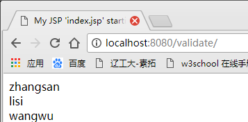 Set标签用于将某个值放入指定范围
- scope：指定变量被放置的范围，该属性可以接受application、session、request、page或action. 如果没有设置该属性，则默认放置在OGNL Context中.
- value：赋给变量的值，如果没有设置该属性，则将ValueStack栈顶的值赋值给变量.
生成一个Map对象：(Key–Value)
<s:set name="foobar" value="#{'k1': 'value1','k2':'value2'}"/>
<s:iterator value="# foobar "><!-- 迭代器 -->
<s:property value="key"/>=<s:property value="value"/><br>
</s:iterator>
java 迭代方法：
for(Map.Entry<String,Integer>entry:maps.entrySet){
System.out.println(entry.getKey()+"="+entry.getValue());
}
18、采用OGNL表达式判断对象是否存在于集合中
使用in和not in in表达式
<s:if test="foor" in {'foo', 'bar'}>
在
</s:if>
<s:else>
不在
</s:else>
not in 表达式
<s:if test="foor" not in {'foo','bar'}>
不在
</s:if>
<s:else>
在
</s:else>
附加： 除了in和not in之外OGNL还允许使用某个规则获得集合对象的子集
- ?:获得所有符合逻辑的元素.
- ^:获得符合逻辑的第一个元素.
- $:获得符合逻辑的最后一个元素.
例如：
<s:iterator value="books.{?#this.price}35}" />
19、常用标签
19.1、propert标签：
用于输出指定值：
<s:set name="name" value="kk"/>
<s:property value="#name"/>
- default:可选属性，如果需要输出指定的属性值为null，则显示该属性指定的值.
- value：可选属性，指定需要输出的属性值，如果没有指定该属性，则默认输出ValueStack栈顶的值.
- escape：可选属性，指定是否格式化HTML代码.
- id：可选属性，指定还元素的标识.
19.2、iterator标签
iterator标签用于对集合进行迭代，治理的集合包含List、Set和数组
<s:set name="list" value="{'foo','bar'}"/>
<s:iterator value="#list" status="st">
<s:color=<s:if test="#st.odd">red</s:if><s:else>blue</s:else>>
<s:property/></font><br>
</s:iterator>
- value:可选属性，指定被迭代的集合，如果没有设置该属性，则使用ValueStack栈顶的集合
- id:可选属性，指定即合理元素的id. （过时）
- status：该属性指定迭代时的IteratorStatus实例. 该实例包含以下几个方法：
- int getCount()，返回当前迭代了几个元素
- int getIndex()，返回当前迭代元素的索引
- boolean isEven()，返回当前被迭代元素的索引是否为偶数
- boolean isOdd()，返回当前被迭代元素的索引是否为奇数
- boolean isFirst()，返回当前被迭代元素的索引是否是第一个元素
- boolean isLast()，返回当前被迭代元素的索引是否最后一个元素
19.3、url标签
<s:url value="hellowoeld_add" namespace="/test"><s:param name="person" value="23"/></s:url>
生成类似如下路径： /struts/test/helloworld_add.adtion?persom=23 红色部分为内容路径
当标签的属性作为字符串类型处理时，“%”符号的用途试计算OGNL表达式的值
<s:set value="myurl" value='"http://www.sohu.com"'/>
<s:url value="myurl"/></br>
<s:url value="%{#myurl}"/>
输出结果：
# myurl
http://www.sohu.com
19.4、表单标签：checkboxlist复选框
如果集合为list
<s:checkboxlist name="list" list="{'Java','.Net','Ror','PHP'}" value="{'Java','.Net'}"/>
生成如下html代码：
<input type="checkbox" name="list" value="Java" checked="checked"/><lable>Java</lable>
<input type="checkbox" name="list" value=".Net" checked="checked"/><lable>.Net</lable>
<input type="checkbox" name="list" value=" Ror"/><lable>Ror</lable>
<input type="checkbox" name="list" value=" PHP"/><lable>PHP</lable>
如果集合为Map
<s:checkboxlist name="map" list="#{1:'Java',2:'.Net',3:'Ror',4:'PHP'}" listKey="key" listValue="value" value="{1,2,3}"/>
生成如下html代码：
<input type="checkbox" name="map" value="1" checked="checked"/><lable>Java</lable>
<input type="checkbox" name="map" value="2" checked="checked"/><lable>.Net</lable>
<input type="checkbox" name="map" value="3" checked="checked"/><lable>Ror</lable>
<input type="checkbox" name="map" value="4"/><lable>PHP</lable>
如果集合里存放的是javabean
<%
Person p1 = new Person(1,"第一个");
Person p1 = new Person(2,"第一个");
List<Person> list = new ArrayList<Person>();
list.add(p1);
list.add(p2);
request.setAttribute("person", list);
%>
<s:checkboxlist list="#request.persons" listKey="personid" listValue="name"></s:checkboxlist>
personid和name为Person的属性 生成如下代码：
<input type="checkbox" name="beans" value="1"/><lable>第一个</lable>
<input type="checkbox" name="beans" value="2"/><lable>第二个</lable>
19.5、表单标签：radio单选框
如果集合为list
<s:radio name="list" list="{'Java','.Net','Ror','PHP'}" value="'Java'"/>
生成如下html代码：
<input type="radio" name="list" value="Java" checked="checked"/><lable>Java</lable>
<input type="radio" name="list" value=".Net"/>
<input type="radio" name="list" value="Ror"/>
<input type="radio" name="list" value="PHP"/>
如果集合为Map
<s:radio name="map" list="#{1:'Java',2:'.Net'3:,'Ror',4:'PHP'}"
listKey="key" listValue="value" value="1"/>
生成如下html代码：
<input type="radio" name="map" value="1" checked="checked"/><lable>Java</lable>
<input type="radio" name="map" value="2"/><lable>.Net</lable>
<input type="radio" name="map" value="3"/><lable>Ror</lable>
<input type="radio" name="map" value="4"/><lable>PHP</lable>
如果集合里存放的是javabean
<%
Person p1 = new Person(1,"第一个");
Person p1 = new Person(2,"第一个");
List<Person> list = new ArrayList<Person>();
list.add(p1);
list.add(p2);
request.setAttribute("person", list);
%>
<s:radio name="beans" list="#request.persons" listKey="personid" listValue="name"/>
personid和name为Person的属性 生成如下代码：
<input type="radio" name="beans" value="1"/><lable>第一个</lable>
<input type="radio" name="beans" value="2"/><lable>第二个</lable>
19.6、表单标签select下拉选择框
<s:select name="list" list="{'Java','.Net'}" value="'Java'"/>
生成如下html代码：
<s:select name="list" id="list">
<option value="Java" selected="selected">Java<option/>
<option value=".Net">.Net <option/>
</select>
<s:select name="map" list="#{1:'Java',2:'.Net'3:,'Ror',4:'PHP'}"
listKey="key" listValue="value" value="1"/>
生成如下html代码：
<s:select name="list" id="list">
<option value="1" selected="selected">Java<option/>
<option value="2">.Net<option/>
</select>
20、<s:token/>标签放置重复提交
<s:token/>标签放置重复提交用法如下： 第一步：在表单中加入<s:token/>
<s:form action="Action_execute()" method="post" >
姓名<s:textfield name="name"/><s:token/>
<input type="submit" value="发送"/>
</s:form>
第二步：
<action name="Action_*" class="com.haibao.action.XMLvalidate"
method="{1}">
<interceptor-ref name="defaultStack"/>
<interceptor-ref name="token"/>
<result name="ivalid.token">/message.jsp</result>
<result name="success">/WEB-INF/page/message.jsp</result>
</action>
以上配置加入了“token”拦截器和“ivalid.token”结果，因为“token”拦截器在会话的token与请求的token不一致时，将会直接返回“ivalid.token”结果.
Xin态好先生
机会是给有准备的人的.